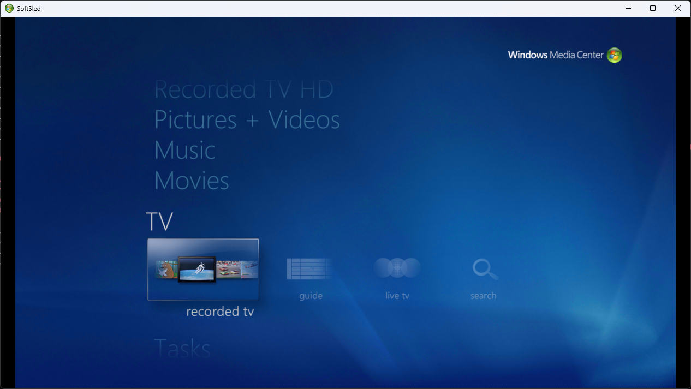
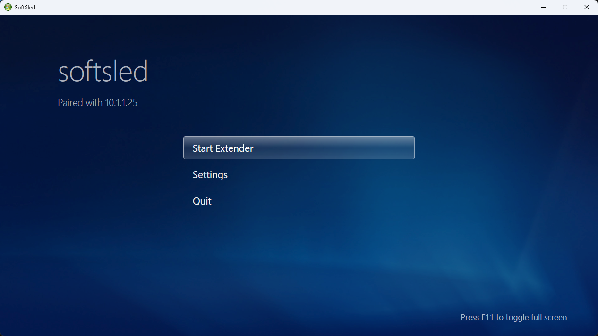
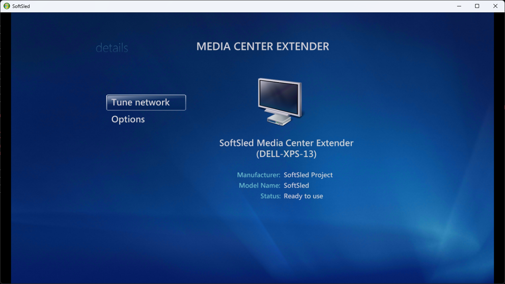
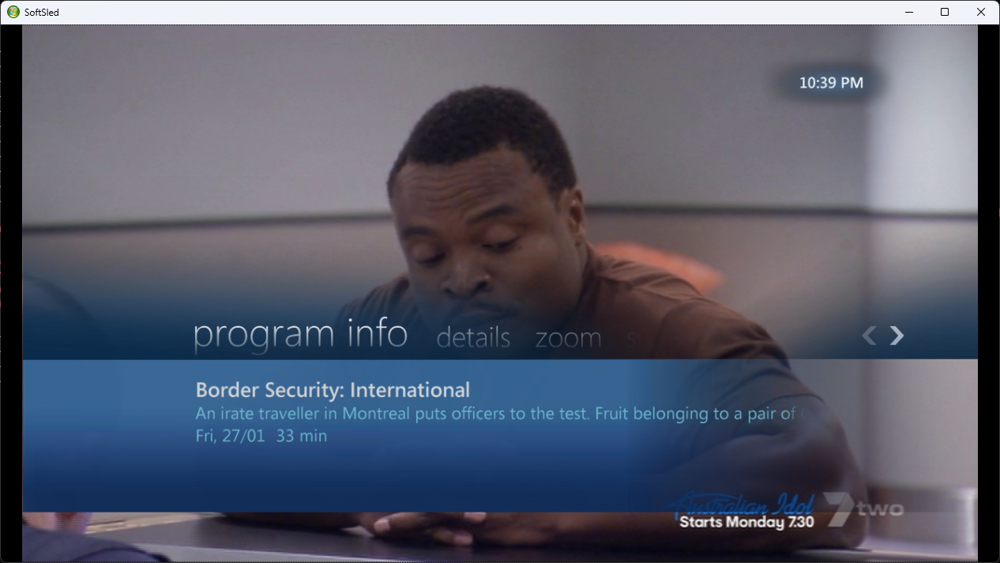
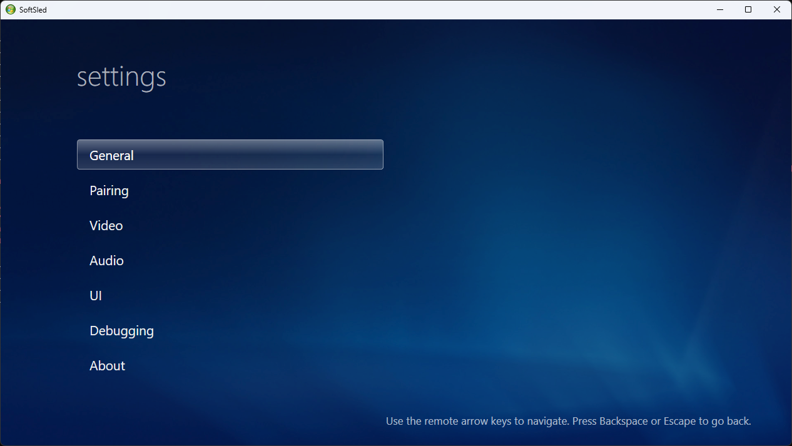

An open-source software Windows Media Center Extender — stream the full 10-foot Media Center experience to any Windows PC.

Media Center Extenders were dedicated devices — like the Xbox 360 or Linksys DMA2200 — that let you enjoy Windows Media Center in another room without a second PC. SoftSled is a pure-software extender: it convinces a Media Center host that it's a genuine certified extender, then renders the experience on an ordinary PC. It's a revival of the original CodePlex SoftSled project, rebuilt from the protocol up.
Prerequisites, host-side setup with the configuration tool, pairing and your first connection.
Set it up → ✨Live & recorded TV, music, pictures, video, the full WMC shell with transparent UI and interface sounds.
See features → ⚙️UPnP pairing, the DSLR virtual-channel protocol, a patched FreeRDP transport and RTSP A/V playback.
Go deeper →Not a remote desktop window — the genuine 10-foot shell, navigable with arrow keys or a remote, with Media Center's signature translucent UI composited over full-motion video.




You'll need a PC running Windows Media Center (Windows 7, or Windows 8/8.1 with WMC) as the host, and a Windows PC to act as the extender.